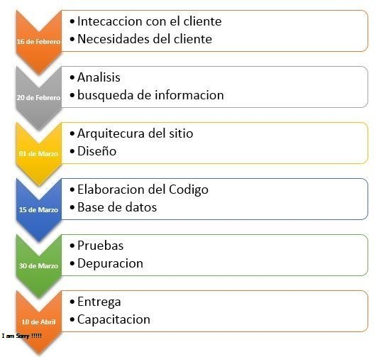
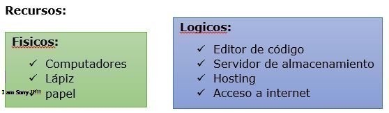

Propuesta
Requerimiento
La tienda “Texas Electronics” se dedica a la comercialización de componentes electrónicos tales como: resistencias, transistores, circuitos integrados, sistemas embebidos, condensadores, bobinas y demás elementos de uso común en la industria, control y automatización electrónica de procesos. Pero en los últimos días ha tenido inconvenientes con respecto a la cantidad de productos que ofrece a sus clientes, ya que en existencia aparece una cantidad y cuando se verifica en bodega dicha cantidad de productos no coincide, este descontrol ha generado problemas con los clientes y con los proveedores, por lo anterior requiere un aplicativo web que le permita controlar las compras a proveedores, ventas al público, inventarios y cálculo de precio de venta al público incluyendo impuestos (%) y utilidad para la tienda (%).
Formulacion del problema
¿Cómo la empresa puede llevar un correcto orden en sus inventarios a la hora de surtir o vender un producto?
Metodologia del desarrollo
Controlar el ingreso de productos a la tienda Mediante este punto podemos controlar los productos que ingresan y los que salen de la tienda identificando si son productos vendidos o productos devueltos por imperfecciones de fabrica.
Alertar al propietario sobre los productos que se estén agotando Mediante un anuncio de alerta llamativo informar al propietario que productos se están agotando, que las unidades de un producto de mayor demanda no sobre pase el limite estipulado por el propietario y de una alerta temprana para la gestión con el proveedor
Identificar el orden o el sitio exacto donde se guarda el producto Abecés con productos tan pequeños o de mucha similitud con otra referencia se tarda en encontrar el correcto por eso es importante que nuestro aplicativo nos indique en que estantería se encuentra el producto y en que gabinete con esto a la hora de buscarlo ya se tiene su ubicación exacta.
Requeromientos especificos del aplicativo
- Entorno: el aplicativo tener un entorno amigable con el usuario que sea fácil de navegar desde su página principal.
- Seguridad: debe ser seguro y contar con el espacio de autenticación de usuarios (loggin)
- Ordenado: debe ser un sitio el acual tenga un orden gerarquico a la hora de ingresar o restar un producto del inventario puede ser por medio de un paso a paso donde se tomen datos como, código del producto, nombre, ubicación, cantidad a ingresar o restar, valor del producto, nombre del proveedor
- Confiable: el producto debe ser confiable en sentido de coincidir la existencia de un producto en el aplicativo debe ser igual a la del producto en sus ubicación física.
- Autónomo: debe tener autonomía a la hora de facturar impuestos o y utilidades para la tienda, esto puede ser mediante fórmulas preestablecidas que calculen estos valores según el producto, cantidad y precio final
Finalidad del proyecto
Finalmente este aplicativo servirá para cumplir con los requerimientos solicitados por el cliente, en este caso es controlar las compras a proveedores, ventas al público, inventarios y cálculo de precio de venta al público incluyendo impuestos (%) y utilidad para la tienda (%).
Cronograma
 Efecto ambiental, social y tecnologico
Al momento de realizar una sistematización como la que en este caso la empresa “Texas Electronics” requiere, se da un gran impacto en muchos aspectos importantes, en el tema ambiental podemos destacar que el uso del papel disminuirá en gran cantidad ya que las tarjetas de inventario serán reemplazadas por tablas de base de datos almacenadas de manera virtual, estas tendrán la capacidad de archivar los historiales de compras pasadas lo que ara que el archivo sea también digital ya en un dado cosa se podrá imprimir según las necesidades de los usuarios. Otro aspecto importante es el impacto social ya que al pasar de lo físico a lo digital se adquieren conocimientos nuevos, el uso de la tecnología podría inclusive reducir los tiempos de ejecución de in inventario al final del dia con lo que los empleados podrían terminar sus labores fácilmente y en menos tiempo, un aporte negativo seria el daño del sistema imprevisto, o el daño de los computadores usados para este aplicativo web, no estamos exentos de un desastre natural que dañe las redes o algún fallo que no deje continuar con la ejecución momentáneamente mientras el equipo de soporte arregla el problema. En conclusión los aspectos ambientales y sociales que tendría este cambio serian de gran ayuda.